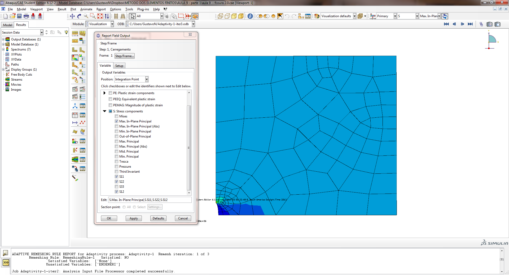
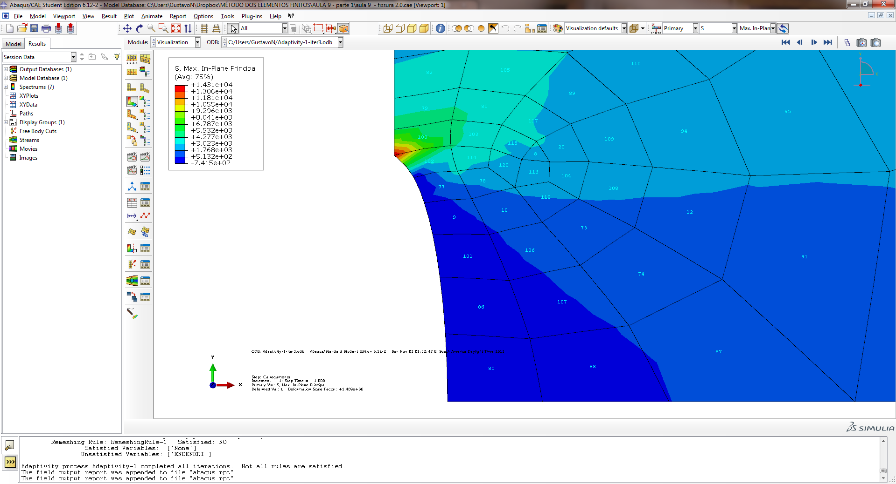

Concentração de tensões ao redor de orifícios
Introdução
Quando um corpo elástico que está submetido a um regime de tensões possuir em sua geometria um ponto de irregularidade ou uma mudança brusca, como, por exemplo, um orifício ou um entalhe, aparecerá em sua vizinhança uma variação localizada do regime de tensões. Os níveis das tensões de pico podem ser diversas vezes maiores do que a tensão nominal que ocorreria no corpo caso não houvesse esta irregularidade. A este aumento das tensões causado pela irregularidade da geometria denomina-se concentração de tensões. Podem-se citar algumas referências clássicas de tal assunto é discutido:
-
Peterson, R. E. Stress Concentration Factors in Design, John Wiley & Sons, Inc. New York, 1953;
-
Savin, G. N. Stress Concentration Around Holes, Pergamon Press, New York, 1961;
Conta-se hoje com uma ferramenta de otimização da forma para minimizar estes picos de tensões. O uso desta ferramenta não é o objetivo deste curso introdutório.
É importante se discutir também a estimativa da precisão das soluções aproximadas obtidas numericamente via MEF. Na utilização de cada elemento na Biblioteca de Elementos resulta extremamente importante conhecer o grau de precisão alcançada pela solução, em problemas com resultado conhecido, realizando-se também um estudo da convergência, utilizando-se diversas malhas e subdivisões. Visando a discussão destes dois assuntos propostos, inicia-se o estudo pela análise de uma placa esbelta, quadrada, submetida a um regime de tensões uniformes em uma das direções. A seguir, simular-se-á uma pequena fissura central perpendicular à direção das tensões uniformes, percebendo-se assim a perturbação que ocorre. O estudo da evolução das fissuras pode ser realizado com o auxílio da Mecânica da Fratura, não sendo o seu uso, objetivo de um curso introdutório. Na sequência estudam-se diversas formas de orifícios, analisando-se em especial a perturbação introduzida no regime de tensões da placa, ou seja, a concentração de tensões em torno dos diversos orifícios. Por se conhecer a solução exata de algumas destas soluções, pode-se discutir a convergência das soluções para o estudo de diversas malhas e elementos. A figura 1 mostra um esquema de diversas placas a serem analisadas.
Placa submetida a um regime uniforme de tensões
Se a solução exata é um campo de tensões uniforme, a solução obtida por Elementos Finitos coincidirá com a solução exata, qualquer que seja a malha. No caso da placa esquematizada na figura 1 (a), ou seja, uma placa fina quadrada e de espessura constante, composta por um material cujo Módulo de Elasticidade E = 3E10 Pa, Coeficiente de Poisson ν = 0.3, submetida a um carregamento uniforme em um dos bordos, porém sem considerar a fissura na região central, a solução é um regime uniforme de tensões.
$$
Placa submetida ao caso do furo em elipse
Ao se introduzir uma pequena fissura ou furo na placa, como descrita no item anterior, uma grande perturbação aparecerá no campo de tensões e na região próxima a fissura ou furo aparecerá uma concentração de tensões. Visando avaliá-la, gera-se um modelo de elementos finitos, que devido à consideração de simetria, poderá conter apenas um quarto da placa, conforme o esquema apresentado na figura 2, desde que se apliquem as condições cinemáticas de contorno apropriadas nesta simulação.
- PROPRIEDADES GEOMÉTRICAS E DO MATERIAL
Modelo bidimensional utilizando o estado plano de tensões
Módulo de Elasticidade longitudinal ou de Young: Ex = 3E10 Pa.
Coeficiente de Poisson = 0.3
Espessura: 0.5 m
- CARGA
Pressão P = -2000 Pa
- RESOLUÇÃO
O procedimento de resolução pode ser demonstrado no seguinte fluxograma (a ordem pode eventualmente ser quebrada em pontos específicos por conveniência):
-
INÍCIO DA ANÁLISE
-
Se você ainda não iniciou o programa Abaqus/CAE, digite cmd no Menu Iniciar para abrir o Prompt de Comando e nele digite abq6122se cae para executar o Abaqus.
-
Em Create Model Database na caixa Start Session que aparece, selecione With Standard/Explicit Model.
- PRÉ-PROCESSAMENTO
-
No menu Model à esquerda, clique com o botão direito em Model-1 e selecione Rename. Digite Concentraçãodetensões.
-
No menu Model à esquerda, dê duplo clique em Parts, no campo Name digite PlacaFina, e selecione as opções: 2D, Deformable, Shell, Planar. Em approximate size digite 20. Clique em Continue...
- Clique em Create Lines: Rectangle (4 lines) na caixa de ferramentas e insira as seguintes coordenadas 0,0 – 6,6. Em seguida, desative a função Create Lines: Rectangle (4 lines) e clique em Done.
- No menu Model à esquerda, dê duplo clique em Materials. Na janela Edit Material Renomeie o material para MaterialdaPlaca, selecione Mechanical>Elasticity>Elastic e digite 3E10 em Young’s Modulus e 0.3 em Poisson’s Ratio. Clique em OK.
- No menu Model à esquerda, dê duplo clique em Sections. No campo Name: digite SeçãoPlaca, em Category selecione Solid, e em Type selecione Homogeneous. Clique em Continue... Na janela Edit Section, Marque Plane Stress/strain thickness: e digite 0.5. Certifique-se que MaterialdaPlaca está selecionado em Material: e clique em OK.
- No menu Model à esquerda, abra Parts>PlacaFina e dê duplo clique em Section Assignments. Selecione a placa e clique em Done. Selecione SeçãoPlaca e clique em OK.
- No menu Model à esquerda, abra Assembly, dê duplo clique em Instances e clique em OK na janela Create Instance.
- No menu model à esquerda, dê duplo clique em Steps. Digite Carregamento no campo Name: e Clique em Continue... Então clique OK na nova janela que se abre.
- No menu model à esquerda, dê duplo clique em Loads. Na janela Create Load, no campo Name digite CargaP, troque o Step para Carregamento, em Types for Selected Step selecione Pressure e clique em Continue**....
- Selecione a aresta direita da placa e clique em Done. Na janela Edit Load, digite -2000 no campo Magnitude: e clique em OK.
-
Foi criada a placa usada na resolução dos itens a, b, c e d como um caso geral. Agora é preciso criar os concentradores de tensão. Comece pelo caso a, da fissura.
-
Na barra de contexto, em Module, selecione Part. Na caixa de ferramentas, clique e segure o botão esquerdo em Partition Edge: Specify Parameter by Location, e escolha a opção Partition Edge: Enter Parameter. Selecione a aresta esquerda e clique em Done. Digite 0.083333 e clique em Create Partition.

- No menu model à esquerda, dê duplo clique em BCs. Na janela Create Boundary Condition, altere o campo Name para ApoiodeSimetria1, Step para Initial e Types for Selected Step para Symetry/ antisymmetry/Encastre. Clique em Continue... Selecione a maior parte da aresta esquerda da placa e clique em Done. Marque XSYMM(U1 = UR2 = UR3 = 0) na janela Edit Boundary Condition e clique em OK.
- Repita o procedimento para criar o ApoiodeSimetria2, selecionando a aresta de baixo e selecionando em Edit Boundary Condition YSYMM(U2 = UR1 = UR3 = 0).
- Na barra de contexto, em Module, selecione Mesh, e em Object, selecione Part. Na barra do menu principal, clique em Mesh>Element Type e selecione a placa. Clique em Done, abrirá a janela Element Type. Em Family, selecione Plane Stress, em Geometric Order, selecione Quadratic e desmarque a opção Reduced Integration Clique em OK.
- Na barra do menu principal, clique em Seed>Part e clique em OK. Clique em Done.
- Na barra do menu principal, clique em Mesh>Part. Aparecerá a pergunta “OK to mesh the part?”, clique Yes. Perceba que a placa fica na cor azul.
- No menu model à esquerda, dê duplo clique em Remeshing Rules e clique em Done. Na janela que se abre, mantenha as configurações padrão e clique em OK.
- Adaptive remeshing pode melhorar a qualidade das simulações refinando a malha de acordo com a necessidade de cada região da peça em análise. Funciona através de iterações sucessivas, até que um determinado critério seja atendido ou o numero máximo de iterações seja alcançado.
- Ao manter a Regra de redefinição da malha em sua opção Padrão (Default sizing methods and parameters) o programa automaticamente seleciona o método melhor aplicado a redução do indicador de erro.
CRITÉRIO VARIÁVEL INDICADORA DE ERRO DEFAULT SIZING METHOD
ELEMENT ENERGY DENSITY ENDENERI UNIFORM ERROR DISTRIBUTION
- 1.Uniform error distribution sizing method X 2.Minimum/maximum control sizing method (exemplificado pela análise de distribuições de tensões numa placa com furo circular)
1.
2.
-
PROCESSAMENTO
-
No menu model à esquerda, dê duplo clique em Adaptivity Processes e clique em OK.
-
Abra Adaptivity Processes e clique com o botão direito em Adaptivity-1 e clique em Submit . Na janela que se abre, clique em OK e aguarde.
-
PÓS-PROCESSAMENTO
-
No menu model à esquerda, clique com o botão direito em Jobs(3)>Adaptivity-1–iter3(Completed)>Results. A tela de análise de dados se abrirá. Na caixa de ferramentas, clique em Plot Contours on Deformed Shape.
-
Na barra de ferramentas no canto superior à direita, selecione S>Max. In-Plane Principal. Na barra de menus principal, clique em Viewport>Viewport Annotation Options.... Na janela aberta, selecione a aba Legend. Clique em Set Font. Na nova janela, altere Size para 14. Clique OK nas duas janelas abertas.
- Na barra de menu principal, clique em Report>Field Output. Na janela Report Field Output, clique em S: Stress Components > Max. In-Plane Principal, S11, S22, S12 e clique em OK. A mensagem aparecerá: “The field output report was appended to file “abaqus.rpt”.” O arquivo abaqus.rpt pode ser encontrado em C:\Users\”Nome do Usuário”\abaqus.rpt. O arquivo exibirá as tensões máximas no plano.

-
Para o caso da fissura foi obtido: S.Max. In-Plane = 11.2054E+03 no elemento 102, ponto de integração 7. (ponta da fissura)
-
Na barra do menu principal, clique em Report Field Output. Na janela Report Field Output, desmarque Stress Components e no campo Position selecione Whole Element. Então marque ENDEN: Element energy density e ENDENERI: Element energy density error indicator e clique OK.

-
Na barra do menu principal, clique em File>Save As.... Dê um nome ao arquivo e clique em OK (É possível também salvar o arquivo com os resultados já calculados - job-1.odb).
- DEMAIS CASOS:
-
Para a resolução dos outros itens, você pode utilizar da ferramenta de corte na parte seguindo os mesmos passos desse guia até aplicação da Carga:
-
Na barra de contexto, em Module, selecione Part. Na caixa de ferramentas, clique em Create Cut: Extrude. O modo sketch abrirá.
- Na caixa de ferramentas utilize a ferramenta Create Lines: Connected para criar o caso do losango, a ferramenta Create Circle: Center and Perimeter para o caso do furo circular, ou a ferramenta Create Ellipse: Center and Perimeter para criar o furo em forma de elipse. Clique em Done ao final da edição.
- Repita os procedimentos do caso A, para resolver os demais casos, colocando apoios de simetria e criando a malha. Exemplo:
- RESULTADOS NA PONTA DA FISSURA:
| CASO A | FISSURA | S. MAX IN-PLANE | S11 | |
|---|---|---|---|---|
| MAXIMO | 11.2054E+03 | 9.9092E+03 | ||
| ELEMENTO | 102* | 100* | ||
| PONTO DE INTEGRAÇÃO | 7* | 3* | ||
| CASO B | CIRCULO | S. MAX IN-PLANE | S11 | |
| MAXIMO | 6.0157E+03 | 6.01539E+03 | ||
| ELEMENTO | 112* | 112* | ||
| PONTO DE INTEGRAÇÃO | 3* | 3* | ||
| CASO C | ELIPSE | S. MAX IN-PLANE | S11 | |
| MAXIMO | 4.00291E+03 | 4.00244E+03 | ||
| ELEMENTO | 57* | 57* | ||
| PONTO DE INTEGRAÇÃO | 7* | 7* | ||
| CASO D | LOSANGO | S. MAX IN-PLANE | S11 | |
| MAXIMO | 14.5545E+03 | 13.0893E+03 | ||
| ELEMENTO | 103* | 103* | ||
| PONTO DE INTEGRAÇÃO | 7* | 7* |
*Elementos e pontos de integração que fazem referência à ponta da fissura ou furo, onde há concentração de tensões em cada caso.
- ERRO:
ERRO
CASO A CASO B CASO C CASO D
-
Variáveis de estimativa de erro representam o erro na solução e têm a unidade da mesma.
-
Estimativas de erro são aproximações e não representam uma estimativa precisa e conservadora do erro da solução. A qualidade do indicador de erro pode ser muito ruim no caso de uma malha grosseira, entretanto ela vai melhorando à medida que a malha é refinada.
-
O Abaqus/CAE fornece variáveis indicadoras de erros locais para a malha gerada
CRITÉRIO VARIÁVEL INDICADORA DE ERRO VARIAVEL DA SOLUÇÃO BASE
ELEMENT ENERGY DENSITY ENDENERI ENDEN
-
Os Algoritmos de solução do abaqus usados na mudança da malha (Adaptive remeshing) consideram o valor do indicador de erro e a solução base simultaneamente.
-
A estimativa do erro ultrapassando aproximadamente 10% da solução base representa: Alta probabilidade do valor da solução ser imprecisa e inapropriada na região, a malha pode ser muito grosseira para a análise ou talvez exista singularidade de tensão no elemento.
-
ERRO = (ENDENERI/ENDEN)*100